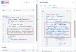

Generative Agents Tech Blog
https://blog.generative-agents.co.jp/
Generative Agents Tech Blog
フィード

Difyユーザー必見！JSON Parseツールで面倒な整形作業から解放 2
2
Generative Agents Tech Blog
はじめまして！ジェネラティブエージェンツの清水れみおです！ 今流行りのLLMアプリ開発プラットフォーム『Dify』についてユースケースや実装方法をみなさんに提供していきます！ 今回はJSON Parse(整形)についてです！ ※2024年8月時点の環境です。Dify Ver.0.6.16 Dify で HTTP ブロックをよく使いますよね？ API からデータを取得して色々処理したい時に便利なんですが、返ってくる result の整形がちょっと面倒に感じることはありませんか？ 特に複雑な JSON データだと、必要な情報を取り出すのにコードを結構書かないといけなかったり…。 そこで今回は、Di…
16時間前
ジェネラティブエージェンツが日本企業初のLangChain公式Expertsに認定されました 1
Generative Agents Tech Blog
ジェネラティブエージェンツの大嶋です。 先日、ジェネラティブエージェンツが日本企業初のLangChain公式Expertsに認定され、LangChainのWebサイトに掲載されました！ www.langchain.com LangChain Expertsは、LangChainのエコシステムを熟知した、LangChain社のチームの延長とされています。 これまでのLangChainに関する活動 GA社のメンバーは、LangChainやLangSmith、LangGraphの実システムでの活用はもちろん、LangChainに関してさまざまな活動をしていきています。 書籍「ChatGPT/Lang…
4日前
勉強会「機械学習アプリケーション（LLMアプリケーション）の「評価」の基本を改めて整理・議論する会」を開催しました #StudyCo
Generative Agents Tech Blog
株式会社ジェネラティブエージェンツの大嶋です。 運営している勉強会コミュニティStudyCoで「機械学習アプリケーション（LLMアプリケーション）の「評価」の基本を改めて整理・議論する会」というイベントを開催しました。 studyco.connpass.com この勉強会では、機械学習アプリケーション（LLMアプリケーション）の「評価」について、あらかじめ用意した資料をベースとして議論していきました。 これまで関わってきた仕事や経験によって気になる点も変わるため、登壇者によって「こういう視点の話もあるよね」という様々な話がでてきて、個人的にはとても良い勉強会だったと思います。 アーカイブ動画を…
5日前
マイナビ主催「TECH+セミナー AI Day 2024 Jul. AI浸透期における活用法」にて基調講演を行いました 1
Generative Agents Tech Blog
ジェネラティブエージェンツの西見です。 7月18日に行われたマイナビさん主催の「TECH+セミナー AI Day 2024 Jul. AI浸透期における活用法」にて、AIエージェントに関する基調講演を行いました。 news.mynavi.jp 会員限定（登録は無料です）で基調講演の内容に関するレポート記事が公開されておりますので、詳しくはぜひ、こちらの記事をご覧いただければと思います。 news.mynavi.jp 基調講演のタイトルは「人のマネジメントからAIのマネジメントへ - 変わるビジネスと人間の役割」。AIエージェントとの協働が当たり前になる未来を見据えたときに、人間の役割はどうなっ…
8日前
ジェネラティブエージェンツのウェブサイトをオープンしました！
Generative Agents Tech Blog
ジェネラティブエージェンツの西見です。 本日、当社のウェブサイトをオープンしました！ www.generative-agents.co.jp ジェネラティブエージェンツは「AIエージェントと協働する世界をつくる」をテーマに、AIエージェントの開発や利用促進に取り組んでいる、AIエージェント専業の組織です。 生成AI、特に大規模言語モデル（LLM）を活用したAIエージェントであるLLMエージェントに可能性を感じており、様々なイベントへの登壇や書籍・雑誌記事の執筆を通して、そのようなAIエージェントの認知向上に取り組んでいます。 一方で、いろいろ書いたり、いろいろ話したりしてはいるものの、端的に私…
8日前

GA社の研究員コミュニティでDifyのハンズオンを実施しました
Generative Agents Tech Blog
株式会社ジェネラティブエージェンツの大嶋です。 7月22日に、GA社の研究員コミュニティでDifyのハンズオンを実施しました。 dify.ai イベントの内容 以前からDifyがかなり話題になっていると思いますが、まださわる時間をとれていない方もいると思います。 そこで、GA社の研究員コミュニティでDifyのハンズオンを実施しました。 内容としては、テキストの入力に加えてマルチモーダルモデルへの画像の入力を試したり、RAGのワークフローを試したりしました。 実際に動かしながら、「チャンク化はどの程度詳細に可能なのか」といった点を確認したり、ハマりどころを体験したりできました。 ユースケースの議…
14日前
7/25 Azure OpenAI Service DevDayにて「LLMでできる！使える！生成AIエージェント」についてお話しました
Generative Agents Tech Blog
ジェネラティブエージェンツの西見です。 7/25に開催されたAzure OpenAI Service DevDay（以下、AOAI DevDay）にて「LLMでできる！使える！生成AIエージェント」というタイトルで登壇しました。 AOAI DevDayの詳細については吉田さんの記事をご覧ください。 blog.generative-agents.co.jp azureai.connpass.com ジェネラティブエージェンツはLLMアプリケーションを扱う先端企業として、開発者コミュニティに積極的に関わっていきます。 登壇内容 二部屋に分かれてセッションを行う後半戦での登壇だったのですが、ありがた…
15日前
勉強会「【LangChainゆる勉強会#10】LangGraphのマルチエージェントのチュートリアルを解説」を開催しました #StudyCo
Generative Agents Tech Blog
株式会社ジェネラティブエージェンツの大嶋です。 運営している勉強会コミュニティStudyCoで「【LangChainゆる勉強会#10】LangGraphのマルチエージェントのチュートリアルを解説」というイベントを開催しました。 studyco.connpass.com アーカイブ動画はこちらです。 youtube.com イベントの内容 この勉強会では、LangGraphのマルチエージェントのチュートリアルを動かしながら解説しました。 LangGraphは、LangChainにAIエージェント開発のための機能を追加したライブラリであり、AIエージェントの実装の選択肢として有名です。 以前から「…
18日前
Tokyo AI Talks主催「応用機械学習と人工知能セミナー: AIエージェント」で登壇しました
Generative Agents Tech Blog
ジェネラティブエージェンツの西見です。 7/18（木）にTokyo AI Talks主催で開催された「応用機械学習と人工知能セミナー: AIエージェント」で登壇しました。 tokyoai.connpass.com かなりマニアックなテーマ＆オンサイト限定にも拘わらず100名近い方に足を運んでいただき、大盛況のイベントでした。昨今のAIエージェントへの関心の高さを伺わせます。 イベントで発表されたスライド 電通総研 太田さん「ヘルプデスクの事例から学ぶAIエージェント」 speakerdeck.com Algomatic 宮脇さん「コード生成を伴うLLMエージェントの最新動向」 speakerd…
21日前
Software Design 2024年8月号に「第11回：LangGraphのcreate_react_agentでエージェント開発を省力化」を寄稿しました
Generative Agents Tech Blog
ジェネラティブエージェンツの西見です。 技術評論社Software Design誌にて「実践LLMアプリケーション開発」という連載を担当しており、本日7月18日発売の2024年8月号にて、「第11回：LangGraphのcreate_react_agentでエージェント開発を省力化」という記事を寄稿しました。LangGraphの実装に関心のある方は、ぜひご覧頂けると嬉しいです！ Software Design (ソフトウェアデザイン) 2024年08月号 [雑誌]技術評論社Amazon 8月号の特集は奇遇にもLangChainによるLLMアプリケーション開発ですので、LangChainもLan…
23日前
「起業の科学」の田所雅之さんとYouTubeスタートアップチャンネルにてAIエージェントについて対談しました
Generative Agents Tech Blog
ジェネラティブエージェンツの西見です。 2024年5月29日から2024年6月19日にかけて、「起業の科学」の著者でありスタートアップアドバイザーである田所雅之さんが運営するスタートアップチャンネルにて、生成AIのビジネス活用からAIエージェントの可能性について対談した動画が公開されました。 起業の科学作者:田所 雅之日経BPAmazon 田所さんの近著には「起業参謀」があります。 「起業参謀」の戦略書――スタートアップを成功に導く「５つの眼」と２３のフレームワーク作者:田所 雅之ダイヤモンド社Amazon スタートアップチャンネルで公開されている動画 www.youtube.com www.…
1ヶ月前
Azure OpenAI Service Dev Day を開催します #AOAIDevDay
Generative Agents Tech Blog
ジェネラティブエージェンツの吉田真吾です。 Azure OpenAI Service Dev Day (通称 AOAI Dev Day) を開催します きたる7/25(木)にAzure OpenAI Service Dev Dayを開催します。 aoai-devday.com azureai.connpass.com エンタープライズLLMプラットフォームであるAzure AIサービスのお祭り ChatGPTが生成AIブームおよびLLMアプリケーション開発の牽引役を担ってきたのと合わせて、それらが既存で信頼性の高いMicrosoft Azure上で統合的に扱える Azure OpenAI Se…
1ヶ月前
ChatGPT Meetup Tokyo #8 を開催しました #ChatGPTjp
Generative Agents Tech Blog
株式会社ジェネラティブエージェンツの吉田真吾です。 2024/7/11(木)に東京ミッドタウンのJBCC株式会社の会場をお借りして、ChatGPT Meetup Tokyo #8 を開催しました。 chatgpt.connpass.com アーカイブ動画はこちらです。 www.youtube.com ChatGPTをはじめとした生成AIをごった煮で知見共有するコミュニティと勉強会 ChatGPT Community(JP) および ChatGPT Meetup はChatGPTをはじめとした生成AIをごった煮で知見共有するコミュニティと勉強会です。つねにオープンマインドで知見共有してくれる仲間…
1ヶ月前
勉強会「ノーコード・ローコードLLMアプリ開発ツールの実際！」でZapier ChatGPT Integrationsについて話してきました #StudyCo
Generative Agents Tech Blog
株式会社ジェネラティブエージェンツの大嶋です。 Zapier ChatGPT Integrationsについて登壇 運営している勉強会コミュニティStudyCoで「ノーコード・ローコードLLMアプリ開発ツールの実際！Difyなど4つのツールの概要とディスカッション」というイベントを開催しました。 studyco.connpass.com この勉強会では Dify Zapier（ChatGPT Integrations） Azure Prompt flow Amazon Bedrock + Step Functions、Amazon Bedrock Studio という4つのテーマを扱い、私は「…
1ヶ月前
Classmethod Odysseyで"LLMアプリにエージェントらしさを組み込む"話をしました #cm_odyssey
Generative Agents Tech Blog
株式会社ジェネラティブエージェンツの吉田真吾です。 Classmethod Odyssey登壇 7/11(木)にクラスメソッド社主催「Classmethod Odyssey」に登壇してきました。 classmethod.jp 生成AIがテーマのトラックで、「LLMアプリにエージェントらしさを組み込む」というタイトルで発表してきました。 speakerdeck.com Agentic(エージェントらしい)AIシステムの時代 生成AIサービスが今後、もっと社会に受け入れられるためには、ユーザーのプロンプトスキルに依存しない「ユーザーの意図」「現状の環境認識」「行動によって変化する環境のイテレー…
1ヶ月前
技術ブログを開設しました
Generative Agents Tech Blog
株式会社ジェネラティブエージェンツの吉田真吾です。 技術ブログを開設しました。 ジェネラティブエージェンツは、AIエージェントの開発・運用をおこなう会社として2024年3月14日に設立されました。 共同創業者は西見さん、大嶋さん、わたし吉田の3名です。 設立の経緯 3名とも、昨年はLLMアプリケーションの開発をたくさんおこなったのですが、まだまだ実ビジネスの現場で活用されるために課題が多く、それらを「マルチエージェント」のアプローチでの解決がほぼ確実だと確信を得ていますが、プロンプト最適化、プランニング性能、長文理解、イベント記憶、マルチモーダリティ、マルチステップ実行、マルチロールによる協調…
1ヶ月前